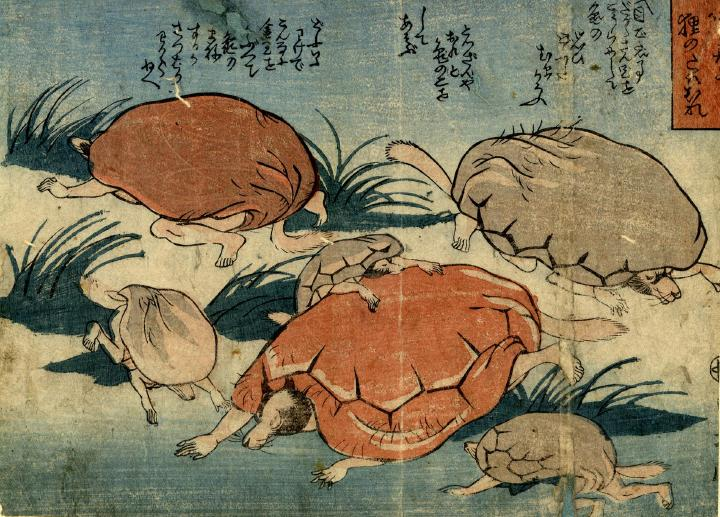

狸たちが大きな陰嚢を頭からかぶり、亀の真似をして遊んでいる。
著作者：一勇斎国芳／出典：親書誌：U426_nichibunken_0252： [矢場] と [亀]；ヤバトカメ／日付：2011／資源識別子：U426_nichibunken_0252_0002_0000
Copyright (c)2010- International Research Center for Japanese Studies, Kyoto, Japan. All rights reserved.